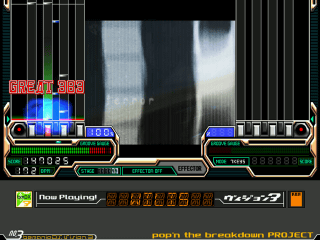

黎明期
1998年6月にBM98の配布が開始される。当時はJ-Pop、ゲーム音楽、Midi音源のコピーやアレンジなどの楽曲が中心であったが、DAIのRainy Heartなどオリジナル楽曲も制作されていた。楽曲の情報等は掲示板やリンク集等で交換されていた。8月にはBM98の開発者であるやねうらお氏がBM98の開発及び配布を中止するが、きくちゃん氏が後を引き継ぎ、開発、配布を継続した。
また、1999年に7鍵盤に対応したFlash Terminalが登場。2000年1月にリリースされたDelight Delight Reduplication Ver.0.3で.bmeの拡張子が使われるようになった。
全盛期
1999年になるとBMSのレビューサイトが登場し、6月にオリジナル楽曲のみを扱うClub Stubborn(通称:クラスタ)(2002年7月閉鎖)と11月にコピー・アレンジ楽曲を扱うRe-Rise(2003年6月閉鎖)が開設され、楽曲の制作が活性化された。これらのサイトで活動していた作曲者は後に同人CDの制作、本家音楽ゲームや他のゲームに楽曲の提供を行うなどの活動を行うようになった者もいる。
また、BM98のスコア保存機能を用いてスコアアタックを開催するサイトも登場した。2000年1月にThe envoy from darkness(2001年4月終了)が開設されたり、2001年12月にBMSのニュースサイトであったDigital Emergency Exitが2001to2002 Score Attack EXPERT+を開催したりした。
BMSフォーマットの拡張としては、2000年にリリースされたbemaniaDX Ver.0.72で拡張BPM変更に対応、2001年12月にリリースされたDelight Delight Reduplication Ver.5.0beta2よりストップシーケンスに対応、12月に公開されたbemaniaDX Ver.0.95では#WAVの定義数がZZ(1296)まで引き上げられ、2002年2月にリリースされたrhythm-it Ver.1.61からロングノートに対応、9月に公開されたふぃーりんぐぽみゅせかんど Ver.0.6ではPMS(BMEタイプ)とダブルプレイ(18ボタン)に対応した。

停滞期と復活
2002年8月にBM98の開発が終了。また、BMS楽曲については、Club Stubborn閉鎖後BMSレビューサイトがいくつか開設されたが、かつて程の盛り上がりには至らなかった。そんな中、2004年8月にいちごびびえすで提案されたBMS OF FIGHTERS 2004(通称:BOF)が開催された。その後、イベントサイトが続々と登場し、再び盛り上がりを見せることとなった。
また、糞譜面、発狂BMSという高難易度譜面も登場する。2003年8月にはクソ譜面パーティーというイベントが、同年11月にはThe Kusofumen Towerが開設。2003年2月にはnazobmplayのインターネットランキングが試験的に開始され、インターネットランキングの盛り上がりに伴い高難易度譜面の人気も増加した。その後に2006年から公開が始まったLunatic Raveや2008年から公開が始まったRuv-it!もインターネットランキング機能を追加した。
BMSフォーマットの拡張としては、2004年4月1日に公開されたDelight Delight Reduplication Ver0.50 beta5でOgg Vorbisに対応。同年8月21日に公開されたナナシグルーヴver.0.999dで定義数36進数に対応。2005年9月に公開されたナナシグルーヴver.1.150で地雷の追加、2006年8月に公開されたLunatic Rave初版で#BMPに動画ファイルの指定が可能となった。
BMS(音楽ゲーム)Wikipediaより